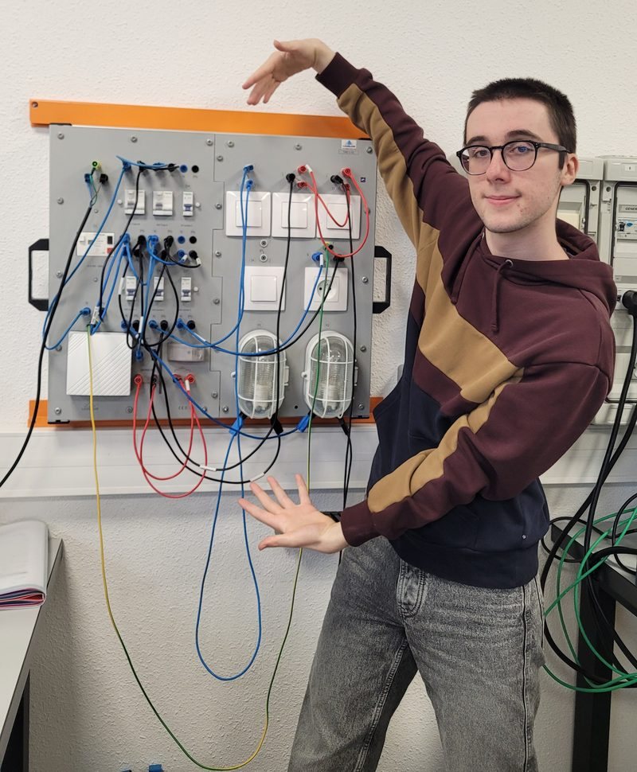
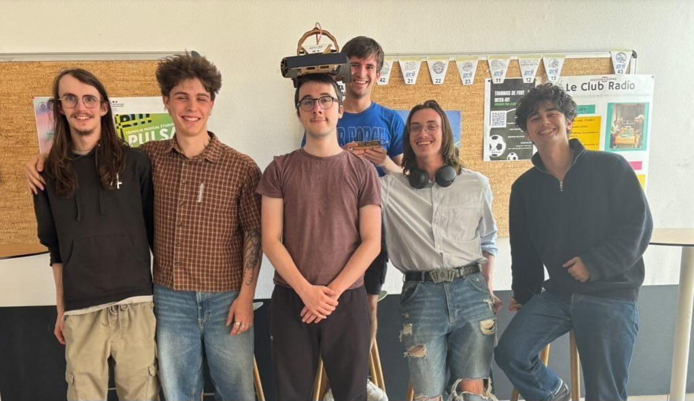

En cours
En cours
Robot Sumo
Mon rôle : conception, soudure et tests
Objectif 2027 · Stage au Japon
Étudiant en 2e année de BUT Génie Électrique et Informatique Industrielle — parcours Électronique et Systèmes Embarqués
J'aime concevoir et fabriquer des cartes électroniques : schéma sous KiCad, soudure, tests et mesures. J'assemble et j'optimise aussi mes propres PC. Je souhaite mettre ces compétences en pratique en entreprise.

En cours
Mon rôle : conception, soudure et tests

Mon rôle : conception et réalisation de la carte

Mon rôle : conception du circuit, soudure, tests

Mon rôle : télécommande : conception, soudure, tests
Lycée Sud des Landes — Tyrosse
Spécialités Physique-Chimie et AMC (Anglais Monde Contemporain)
IUT de Bordeaux — site de Gradignan
2e année, parcours Électronique et Systèmes Embarqués (ESE)
Objectif
Découvrir un environnement industriel et technologique d'excellence
Mon objectif : développer une expertise solide en génie électrique et informatique industrielle, en particulier sur les projets alliant électronique embarquée et programmation, puis effectuer en 2027 un stage au Japon pour découvrir un environnement industriel d'excellence, ainsi que de nouvelles cultures et paysages.
Cuisine et pâtisserie
Pâtes fraîches, desserts au chocolat…
Lego
Grandes constructions et créations personnelles
Randonnée
En montagne
Vélo
VTT et route : trajets du quotidien et sorties
Informatique
Montage et optimisation de PC
Jeux vidéo PC
FPS compétitifs
Théâtre
4 ans en club : aisance devant un public, improvisation
Une question sur un projet, une proposition de stage ? Écrivez-moi, je réponds rapidement.
Télécharger mon CV ↓